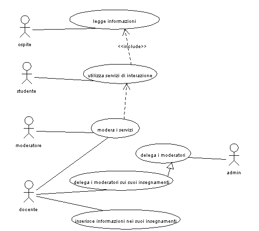
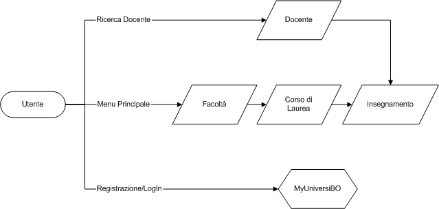

Descrizione generale: l'utente entra nell'applicazione per ricercare informazioni, queste sono raggruppate su canali tematici, per cui navigando raggiunge il canale di suo interesse e ne fruisce dei servizi.
L'utente deve potersi autenticare per poi poter usufruire dei servizi personalizzati.
Dopo l'autenticazione che permettere di identificare al sistema i diversi attori
che possono svolgere azioni diverse sui servizi, disponibili.
L'autenticazione permette di personalizzare anche la navigazione per una ricerca
più veloce dei canali di interesse.

Descrive le principali modalità con cui l'utente deve poter raggiungere direttamente l'informazione desiderata e costituisce lo scheletro di base su costruire la navigazione all'interno del sito.

Dove il blocco MyUniversiBO rappresenta una vista personalizzata sui blocchi informativi principali.
| pagina | id_pagina | accessi | % |
| Esame | 4 | 28625 | 35,73% |
| Home | 1 | 19042 | 23,77% |
| Cdl | 5 | 18469 | 23,05% |
| Facoltà | 6 | 11314 | 14,12% |
| Errore | 0 | 1111 | 1,38% |
| Argomento generico | 20 | 627 | 0,78% |
| MyPage | 3 | 441 | 0,55% |
| Statistiche | 22 | 97 | 0,12% |
| ChiSiamo | 12 | 87 | 0,10% |
| Collabora | 14 | 61 | 0,07% |
| Manifesto | 10 | 52 | 0,06% |
| Regolamento | 11 | 49 | 0,06% |
| StatElenco | 23 | 45 | 0,05% |
| Questionario | 17 | 37 | 0,04% |
| Credits | 16 | 27 | 0,03% |
| Help | 13 | 17 | 0,02% |
La tabella riportata rappresenta alcune statistiche di utilizzo del sito nell'arco di una settimana.
Si vuole migliorare la vista personalizzata delle informazioni
rendendo più utile e utilizzabile il MyUniversiBO (ex-MyPage).
Si evidenzia come le prime 4 pagine costituiscono la maggior parte del traffico
del sito e necessiteranno per prime di una ottimizzazione prestazionale nell'ordine
in cui sono elencate.
Sono stati raccolti i seguenti feedback che devono essere tenuti in considerazione durante le fasi di definizione del sistema ed in alcuni casi dei particolari servizi:
- semplificazione di attivazione degli esami
- aggiungere una mappa del sito
- riconoscimento a prima vista del tipo di autore dell'informazione (studente
o docente)
- visualizzare aggiungi ai preferiti anche se non loggati
- aggiungere presidente del Cdl
- aggiungere corso di laurea per gli studenti
- aggiungere responsabile diritti di facoltà
- comandi web per amministrazione utenti, passaggi di livello
- aggiungere qualche riga su come è nato universibo nel chi siamo
- pagina ringraziamenti
- implementare download con autorizzazione
- cambiare metodo modifica del programma, etc... link icona cliccabile
- se il ChiSiamo cresce bisogna prevedere di aggiungere un livello di navigazione
- aggiungere completare icone nella sezione files, formati
- inserire un form di feedback on-line
- linkare direttamente i forum di facoltà
- permettere l'iserimento di informazioni contemporaneamente su più argomenti
- link dal forum all'homepage più chiaro
- mostrare meglio i link ai contenuti dell'help relativi ad una certa pagina